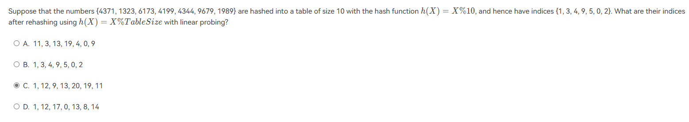

一些经典题目¶
约 2033 个字 预计阅读时间 10 分钟
1. 算法分析¶
- \(Nlog N^2和Nlog N^3\)具有相同的增加速度
- 斐波那契数列递归版本的时间复杂度为\(O(F_N)\)，空间复杂度为\(O(N)\)；迭代版本的时间复杂度为\(O(N)\)，空间复杂度为\(O(1)\)
- 主定理：


有主定理如下：
\[\begin{gather}T(N)=aT(\frac{N }{b})+\Theta(N^k \log^pN),a\ge 1,b\gt 1 ,p\ge 0 \\
T(N)=\begin{cases}O(N^{\log_ba})\ , & if\ \log_ba\gt k \\ O(N^k\log ^{p+1}N)\ , &if\ \log_ba=k \\ O(N^k \log ^pN)\ , & if\ log_ba\lt k
\end{cases}
\end{gather}\]
定义补充¶
- \(T(N)=O(f(N))\ \Rightarrow\) 如果存在常数\(c\)和\(n_0\)，使得当\(N\ge n_0\)时，\(T(N)\le cf(N)\)，即T(N)增长比f(N) 慢 或 相同
- \(T(N)=\Omega (f(N))\ \Rightarrow\) 如果存在常数\(c\)和\(n_0\)，使得当\(N\ge n_0\)时，\(T(N)\ge cf(N)\)，即T(N)增长比f(N) 快 或 相同
- \(T(N)=\Theta(f(N))\ \Rightarrow\) 当且仅当 \(T(N)=O(f(N))\) 且 \(T(N)=\Omega (f(N))\) ,即T(N)与f(N)增长速度相同
- \(T(N)=o(f(N))\ \Rightarrow\) \(T(N)=O(f(N))\) 且 \(T(N)\ne\Theta(f(N))\)，即T(N)增长比f(N) 慢
- \(T(N)=\omega(f(N))\ \Rightarrow\) \(T(N)=\Omega (f(N))\) 且 \(T(N)\ne\Theta(f(N))\)，即T(N)增长比f(N) 快
注意阶乘增长速度比指数函数大： \(2^n=O(n!)\)
2. 线性表¶
- To merge two singly linked ascending lists, both with N nodes, into one singly linked ascending list, the minimum possible number of comparisons is: N
- 最少的情况可以假设第一个链表为{1，2，3，4，5}，第二个链表为{6，7，8，9，10}。此时只用将6和1-5分别比较一次即可，因此最少需要比较N次。
- 需要注意，merge的时间复杂度是\(O(M+N)\)
- 判断循环队列为空的条件是
Q.front==Q.rear，判断为满的条件是Q.front==(Q.rear+1)%Q.size 
- 问的是 rear element 而不是 rear position , rear一般指最后一个元素的下一个位置，所以要减一
3. 堆¶
- 线性算法建堆

- Linear algorithm ， 意味着我们要用调整建堆法O(N) 而不是不断插入建堆O(NlogN)
- 具体而言，就是先无脑放入树中，然后从倒数第二排最后一个有子节点的节点（n/2）开始shiftdown，具体过程省略。

- 最大堆的最小值在没有孩子的节点中

- 其中\(\lfloor \frac{n}{2} \rfloor\)是最后一个节点的父亲，因此唯一有可能的是大于n/2的index
- (True) The worst-case runtime complexity of finding the largest element in a min-heap with \(N\) elements is \(O(N)\)
- 最大的元素只会出现在叶节点，即 N/2 到 N 的范围内
- (Answer : 4) 对四个元素使用\(O(N)\)建堆方法，最多需要比较多少次

- 第一轮只比较左子树两个元素，第二轮要先比较第一个子节点和第二个子节点的大小，再将其中大的那个与根节点比较
- 如果根节点根左子节点交换了，那么它还需要递归检验，和左下子节点再进行比较
4. 树¶
- (False) 二叉树与度为2的树相同
- 度为2的树要求每个节点最多只能有两棵子树，并且至少有一个节点有两棵子树。二叉树的要求是度不超过2，节点最多有两个叉，可以是1或者0；且二叉树的左右子树不能随意颠倒，普通树的子树没有左右之分。
- (False) 二叉搜索树的查找和Binary Search的时间复杂度相同
- 只有平衡的二叉搜索树才与折半查找时间复杂度相同
- (False) 二叉搜索树的最小元素一定位于树根的左子树
- 还有可能是根节点
- 任何二叉树中，NULL指针个数比实际指针个数多

- 有N+1个NULL指针，N-1个非NULL指针
- 将一个general tree \(T\) 转换成 binary tree \(BT\) ，则 \(T\) 的后序遍历与\(BT\)的中序遍历相同，且二者前序遍历相同
- 无论是前序中序还是后序，叶子节点的遍历顺序不变
- (False) 一个包含4,5,6的二叉搜索树，如果4和6在同一层上，那么5一定是它们的Parent
5. 图¶
- 一个weakly connected的digraph，边数最少的情况是树的形式

- 最少|V|-1 采用树的形式
- degree和为边数的两倍

- \(\sum (degree)=2e\), 得到 \(32=12+12+d(v-7)\), 由于 \(d<3\),故 \(8\le 2(v-7)。\)
- 要保证含有10个顶点的无向图连通，所需要的最少边数是：
- 37个 ，先让n-1个顶点构成完全子图，再把第n个顶点与这个子图相连，一共需要 (n-1)(n-2)/2+1
- sad

- 每个Edge的权值+2，则路径的权值等于原来的值加上边的个数*2，如果P的边数很多，就有可能不再是最短路径。
- 欧拉图

- 20个点的完全图，每个vertex的度为19。欧拉图的每个点的度必须是一个偶数，因此可以使得每个点的度数为18，一条边对应两度，减少的边为：20/2 = 10
相关定理
- 无向连通图 G 是 欧拉图 ，当且仅当 G 不含奇数度结点( G 的所有结点度数为偶数)；
- 无向连通图 G 含有 欧拉通路 ，当且仅当 G 有零个或两个奇数度的结点(这两个点为起点和终点)；
- 有向连通图 D 是 欧拉图 ，当且仅当该图为连通图且 D 中每个结点的入度=出度；
- 有向连通图 D 含有 欧拉通路 ，当且仅当该图为连通图且 D 中除两个结点外，其余每个结点的入度=出度，且此两点满足起始点s的入度=出度-1，结束点t的出度=入度-1 或两个点的入度=出度；
如果图没有联通的话，最小生成树不存在
The minimum spanning tree of any weighted graph ___
- A. must be unique
- B. must not be unique
- C. exists but may not be unique
- D. may not exist
答案选 D
- 拓扑序最早最晚完成时间 答案选 C


- 如果没有 4->5 这条边，那么节点4的最晚完成时间应为 19-3=16
- (False) 图的深度优先遍历非递归算法通常采用队列实现，广度优先遍历非递归算法通常采用堆栈实现。
- 图的深度优先遍历采用堆栈，广度优先遍历采用队列
- If DFS from any vertex can visit every other vertices, then the topological order must not exist。 一定有环存在。
- 换句话说，若图G为连通图且不存在拓扑排序序列，则图G必有环。
- (False) If a graph is represented by adjacency lists, then the space taken depends only on the number of vertices, not the number of edges.
- 邻接表 和 邻接矩阵 是不一样的，邻接表采用链表数组的形式表示图
6. 排序¶
- simple insertion sort 交换的次数不会超过逆序对的个数

- 10个元素逆序的话：有C(10,2)=45的逆序对，因此交换的数目不会大于45
- 一趟后能确定一个最终位置的排序

- 一趟后能确定起码一个元素最终位置的排序：堆排序，冒泡排序，快速排序，简单选择排序

- 在逆序对相当少的情况下，选择下列哪个排序最优？ Quick Sort；Bubble Sort；Merge Sort；Insertion Sort。
- 选择插入排序，假设该序列已经递增排完序，逆序对为0，插入排序每轮在有序区从后往前比较，由于无序区第一个元素比有序区最后一个元素要大，直接把该元素插入有序区，不需要再跟前面元素比较，也不需要交换即可完成一轮排序，时间复杂度为 \(O(N)\)
- 如何找到QuickSort合适的中间过程

- 找到给定序列中，前面元素都小于它且后面元素都大于它的元素，它可以是一次Run中选定的Pivot
- 第一次Run选定一个Pivot，如果这个Pivot在第一次Run后被换到了第一个或是最后一个位置，那么第二次Run只会找到一个Pivot；否则第二次有两个Pivot
- LSD基数排序做题

- 第一轮只看个位数，第二轮按照最后两位数对应的大小排列
7. 哈希表¶

- 插入探针数的期望值优于线性寻址探针数
- 在table size是质数，且至少有一半空位的情况下，一个新元素一定可以通过quadratic probing(二次探测)插入
- 在Separate Chaining中，如果允许列表中出现重复的元素，插入通常优于删除(?看不懂)

- 再散列将TableSize扩大两倍为20，再取最近的的质数23作为表长
- 双重哈希，如果第一个哈希函数探测到的位置已经被占用，则使用第二个哈希函数得到一个间隔值，与第一个函数结果相加
- 改变冲突解决策略对于Rehashing来说不必要
- 对包含N个元素的哈希表进行查找，平均查找长度为：
- 不确定，因为不清楚是否会发生冲突


{kind=link}